Propuesta de sitio web
Un sitio propio para presentar el centro, reunir las tres sedes y facilitar el pedido de turnos.
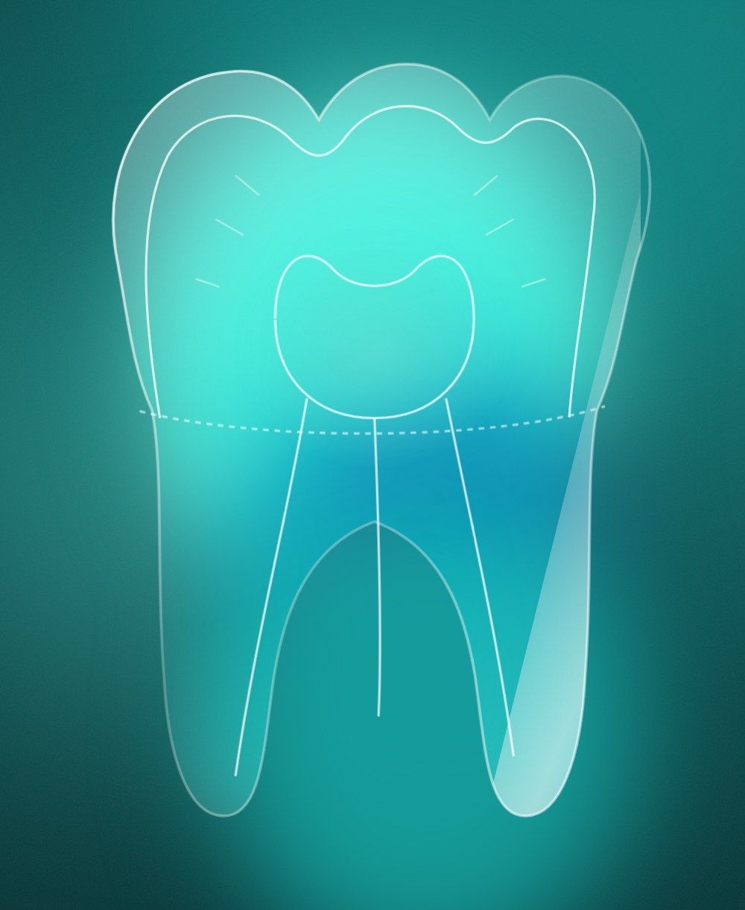
Punto de partida
Sedes, teléfonos y servicios aparecen en un blog, redes sociales y directorios de terceros. No hay un lugar propio que reúna todo.
Para pedir turno hay que llamar a cada sede o conseguir el WhatsApp. Cada paso extra es un paciente que puede no concretar la consulta.
Las reseñas son la primera referencia de quien busca "dentista en Rosario". Hoy hay pocas, aunque la atención sea buena.
La oportunidad: un sitio propio que concentre la información, transmita confianza y convierta cada visita en un pedido de turno.
Qué busca el sitio
Una imagen profesional y cercana, con los tratamientos explicados en lenguaje simple.
Un asistente que arma el pedido de turno con sede, motivo y cobertura, y lo envía por WhatsApp.
Previnca Salud, obras sociales y particulares, con una consulta directa por la obra social de cada paciente.
Una sección que invita a quienes ya se atendieron a dejar su opinión en Google, sede por sede.
Pensado primero para el celular, que es desde donde llega la mayoría de los pacientes, y adaptado a computadora.
Recorrido del sitio · 1
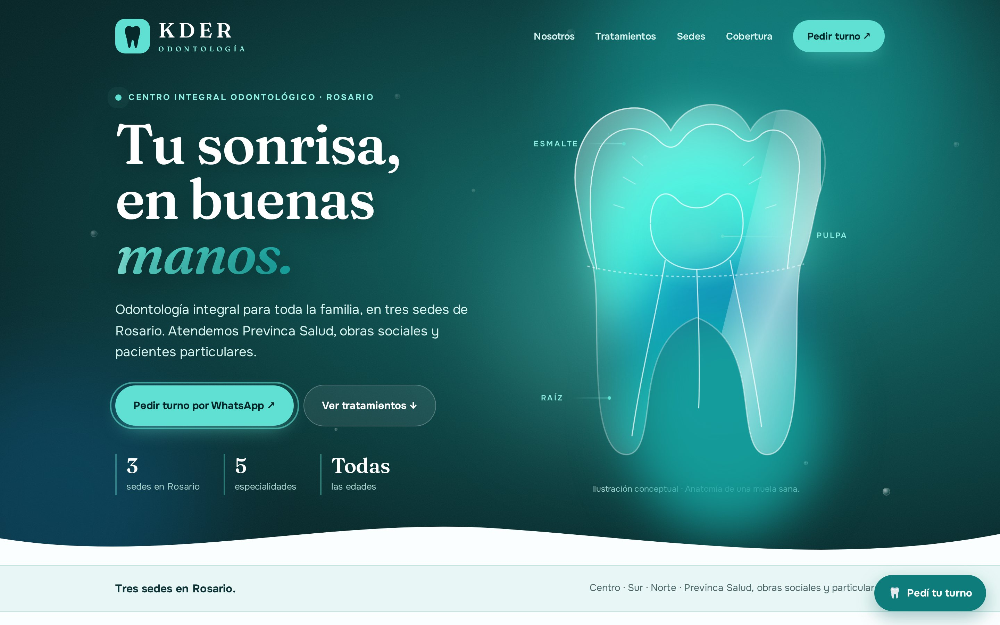
Inicio en computadora. La muela de cristal muestra su anatomía (esmalte, pulpa y raíz) con animaciones suaves.
El inicio presenta el centro en una frase, con acceso directo al turno por WhatsApp y a los tratamientos.
Recorrido del sitio · 2
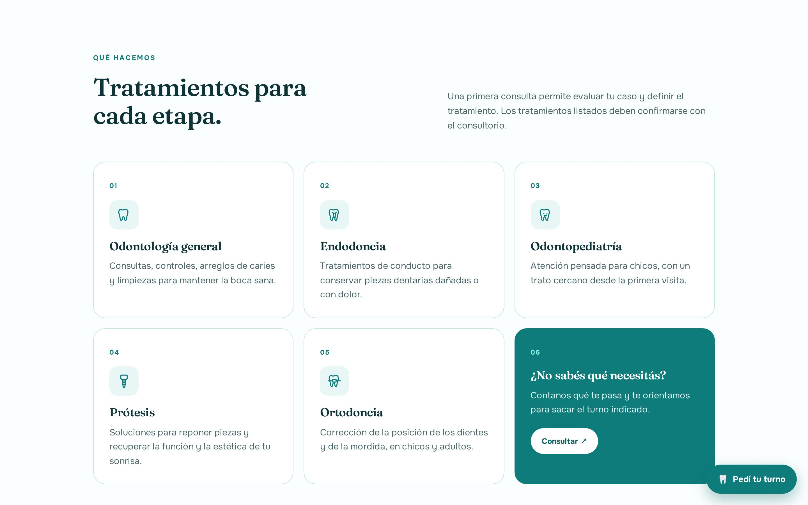
Tratamientos. Cada especialidad con su ícono y una explicación breve.
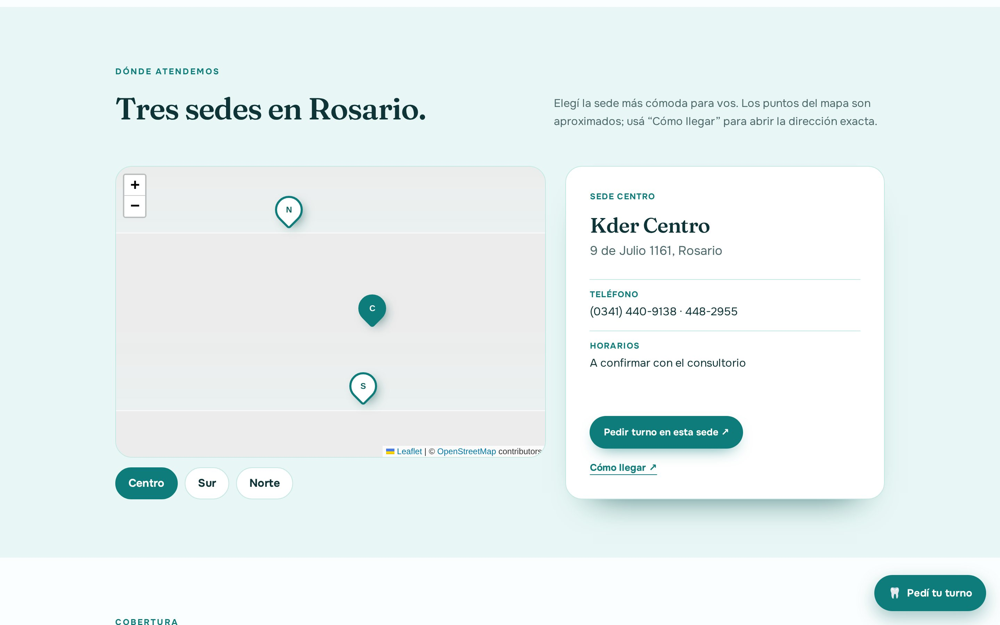
Sedes. Mapa con Centro, Sur y Norte: dirección, teléfono, "Cómo llegar" y turno en esa sede.
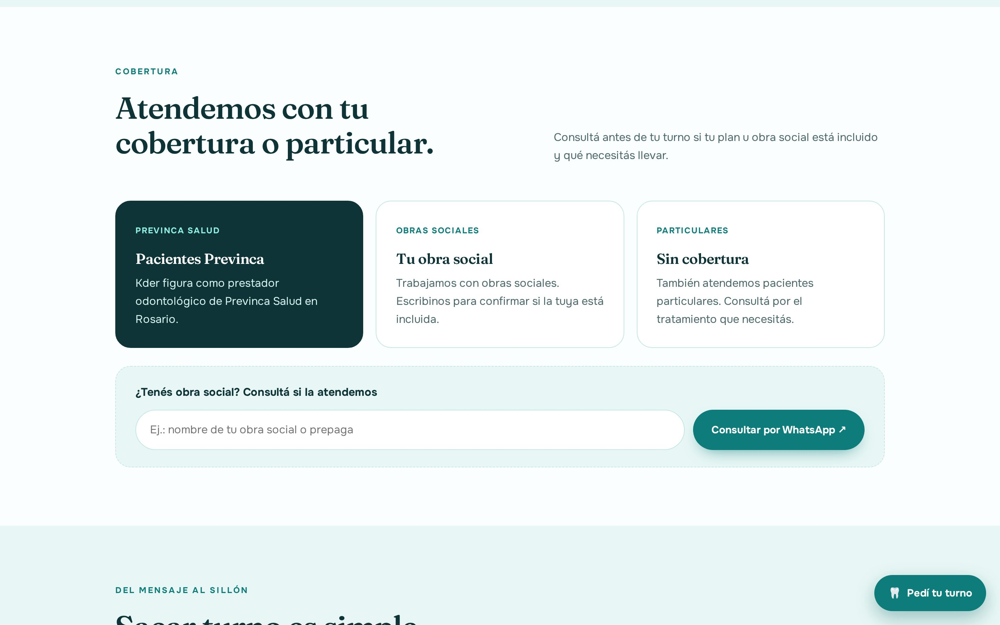
Cobertura. El paciente escribe su obra social y consulta por WhatsApp si la atienden.
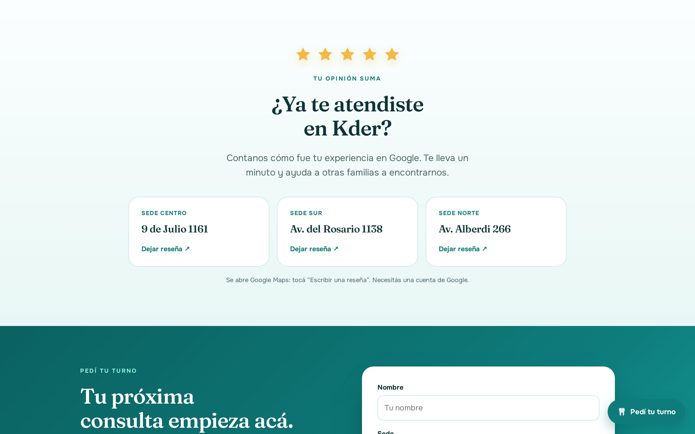
Reseñas. Invitación a opinar en Google, con acceso directo por sede.
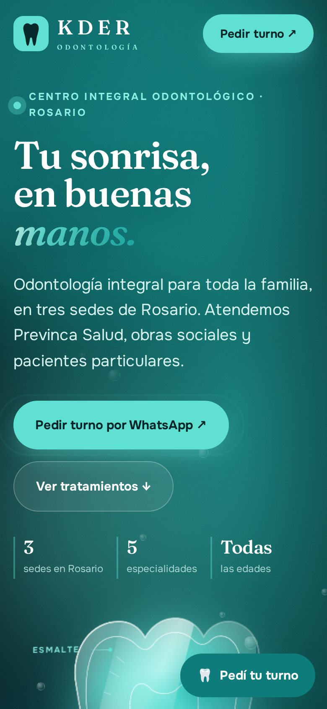
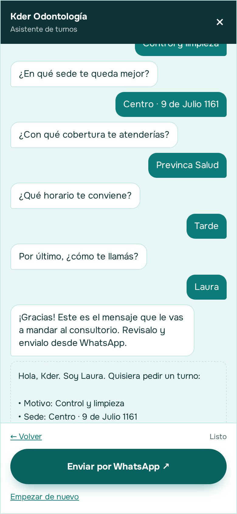
Asistente de turnos
Un botón fijo en todo el sitio abre un asistente que hace cinco preguntas rápidas y arma el mensaje de WhatsApp para el consultorio.
El sitio no guarda datos: el paciente revisa el mensaje y lo envía desde su WhatsApp.
Identidad visual
La propuesta incluye cuatro paletas y tres tipografías para elegir en vivo. Si el centro tiene colores de marca, se arma una paleta propia.
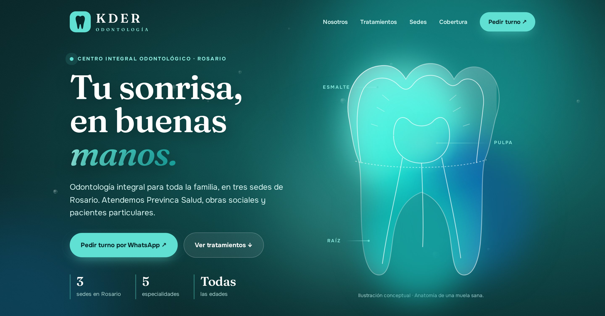
Menta · fresca y clínica
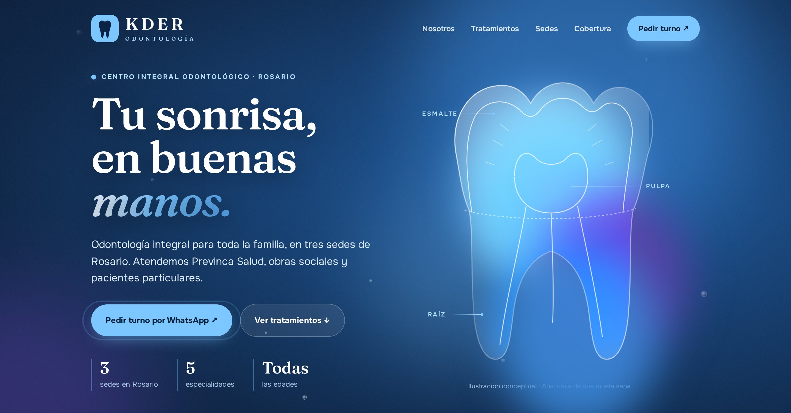
Océano · confianza, institucional
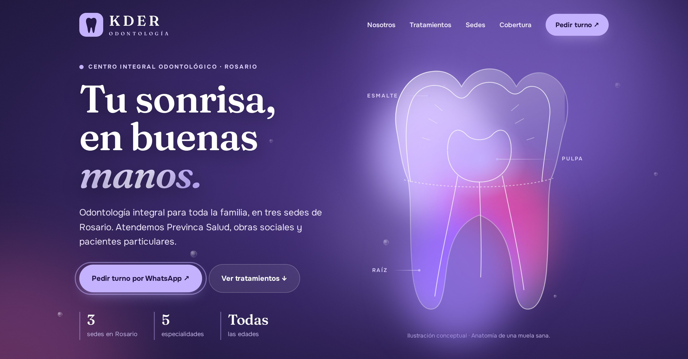
Lavanda · estética y distinta
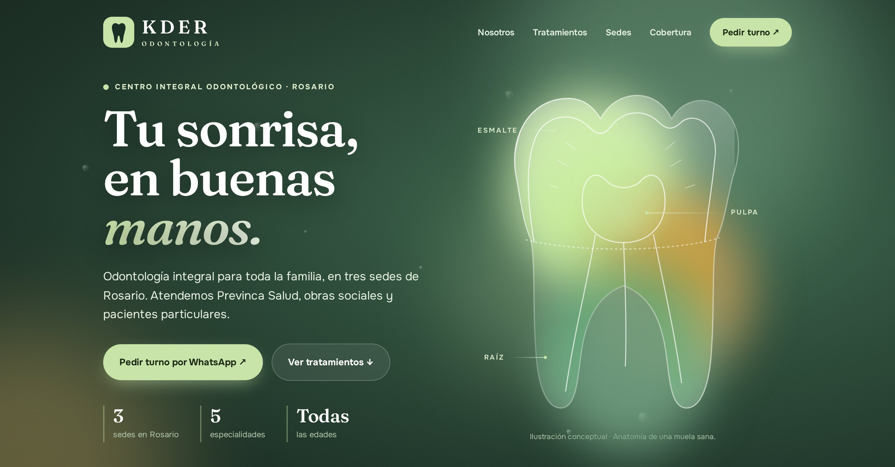
Salvia · cálida y natural
Fraunces · editorial y cálida
Bricolage Grotesque · moderna
Newsreader · clásica y sobria
Qué incluye
Módulos opcionales
El paciente elige sede, día y horario disponibles; el turno aparece en el calendario de esa sede (Google Calendar u otra agenda).
Un cartel por sede: el paciente escanea y deja su reseña mientras espera.
Datos de cada sede para Google, actualizaciones de horarios, precios de referencia o novedades.
Cómo seguimos
Reunión breve para confirmar datos, sedes, horarios y coberturas. Elección de colores y tipografía.
Carga de textos y fotos reales del consultorio y del equipo.
El centro revisa el sitio y se ajustan los detalles.
Dominio propio, pruebas en celulares y puesta en línea.
· Horarios de cada sede
· Lista de obras sociales
· Teléfonos y WhatsApp confirmados
· Fotos del consultorio y del equipo
· Profesionales y matrículas (opcional)
· Logo y colores, si los hay
Inversión
| Concepto | Detalle | Valor |
|---|---|---|
| Sitio webPago único | Diseño, desarrollo, contenidos iniciales y publicación. | $ ________ |
| MantenimientoMensual · opcional | Cambios de horarios, textos y fotos; soporte y respaldo. | $ ________ |
| Turnos online por sedeOpcional | Configuración de agendas por sede y conexión con el sitio. | $ ________ |
| DominioAnual | Registro a nombre del centro. Se abona directamente al registrante. | Costo de registro |
| Alojamiento | Publicación en un servicio sin costo para sitios de este tipo. | Sin costo |
Valores en pesos argentinos. Forma de pago y plazos a convenir. La propuesta tiene una validez de 15 días.
Gracias
La demo se puede recorrer desde el celular escaneando el código, o en el enlace:
kder-odontologia.vercel.app
Juan Cruz Acevedo
Rosario · Santa Fe
Escaneá para ver la demo